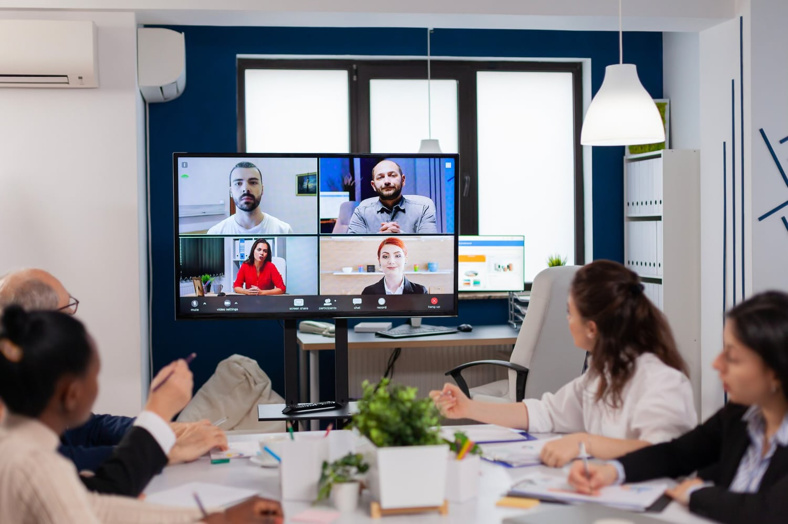
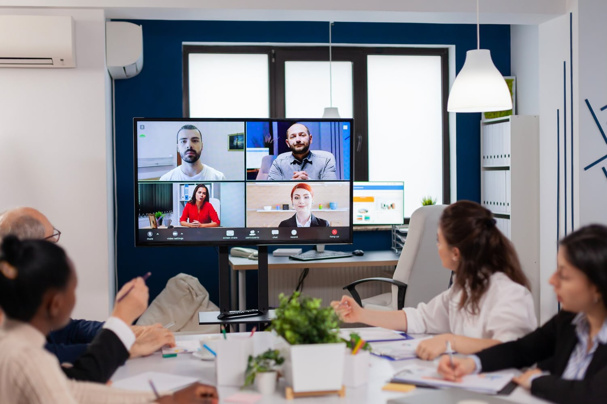
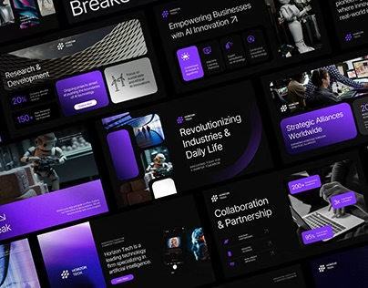
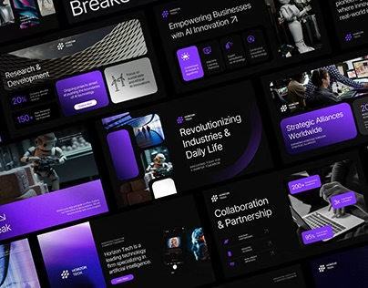

Följ mig
Jag arbetar som projekt- och tjänsteansvarig på Nexora, där jag leder utvecklingen och leveransen av företagets IT-tjänster. Mitt ansvar omfattar att ta fram strategier, planera projekt och samordna team för att säkerställa att våra lösningar möter både tekniska krav och kundernas affärsbehov. Fokus ligger på IT-lösningar, digitalisering och användarcentrerad utveckling.
Min utbildning inom systemvetenskap vid Örebro universitet har gett mig en stabil grund i både teknik och analys. Tillsammans med min erfarenhet inom IT-branschen har det gjort att jag kan kombinera strategiskt tänkande med ett starkt kundfokus. Jag arbetar med att identifiera behov, formulera långsiktiga mål, leda projekt, genomföra workshops och säkerställa kvalitet i alla leveranser.
Som projektledare fungerar jag som länken mellan teknik, design och verksamhet. Jag samarbetar nära med utvecklare, designers och kunder för att skapa effektiva och hållbara IT-lösningar som gör verklig skillnad. Jag brinner för innovation, struktur och användarvänlighet — och vill genom mitt arbete bidra till att Nexora fortsätter växa som en stark aktör inom IT-tjänster.
 

 
